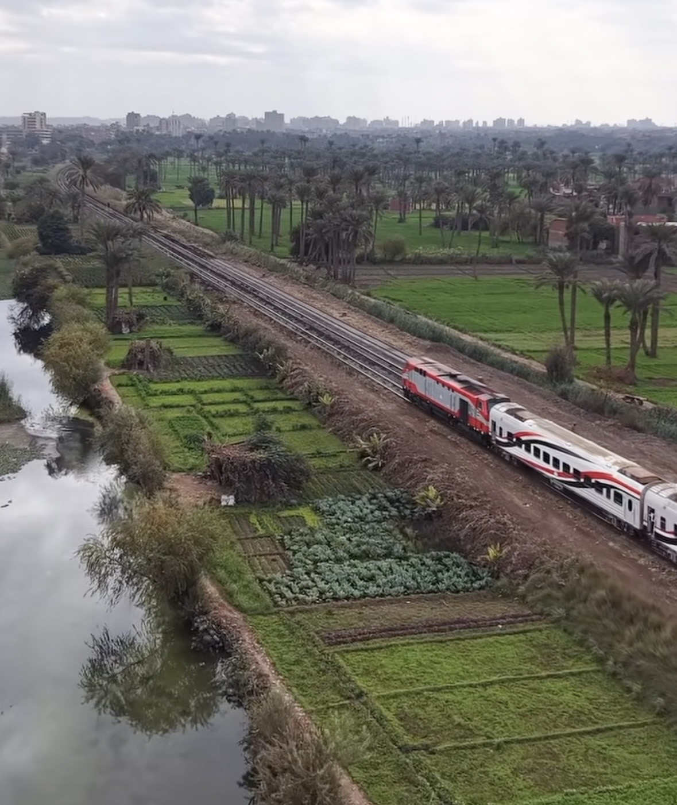

Train collision in Egypt kills at least 7 and injures 112
A train struck another from behind south of Cairo as Egyptian authorities launched an investigation into the cause.

What happened
Two passenger trains collided on Sunday, November 8, 2026, in Al-Ayyat, Giza province, south of Cairo, Egypt. Egypt's Health Ministry reported at least seven deaths and 112 injuries, according to Reuters' account of the latest tally. Egypt's railway authority said a train traveling from Giza to Fayoum struck the rear of another train heading from Cairo to Aswan, causing carriages to derail. Emergency teams attended to the injured and worked to clear wreckage from the tracks. The public prosecutor's office opened an investigation into the technical causes, while President Abdel Fattah al-Sisi called for a swift inquiry into possible responsibility. The casualty figures are provisional and may change as authorities release new information.
The Crow's analysis
The collision has renewed scrutiny of safety on Egypt's passenger rail network, an important transport system with a history of deadly accidents. A rear-end impact alone does not establish whether human error, a signaling problem, a mechanical failure or some other factor was responsible. Investigators will need to examine operating records, track conditions and collision-prevention safeguards. Updates on medical assistance, official casualty counts and the safe restoration of rail service will also be important.
Counterpoint
Past rail disasters and concerns about Egypt's infrastructure provide context, but they do not establish negligence or any specific technical cause in this collision. Egyptian authorities say they have invested in railway modernization. Any connection between those investments, operational safety and the November 8 crash must be assessed against the investigation's findings. The casualty figures reflect the available tally at the time of reporting.